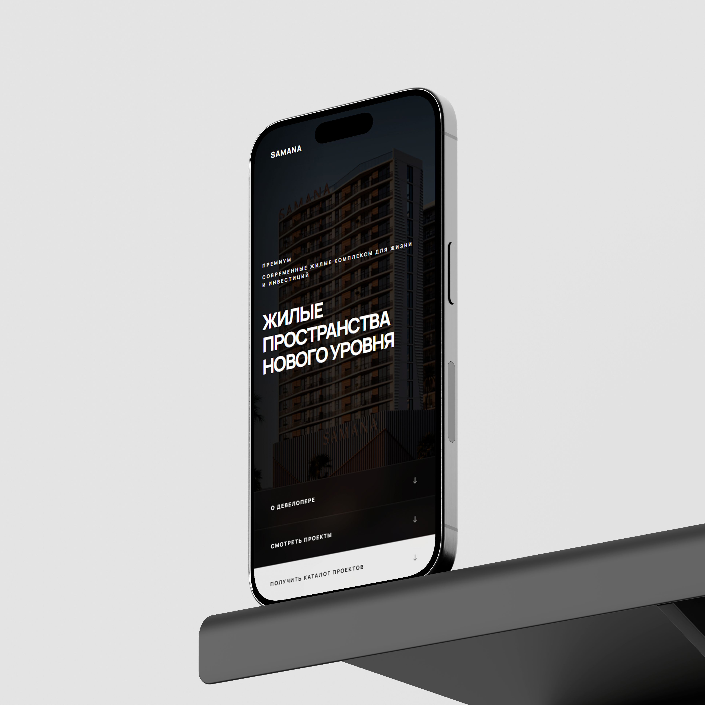

Сайт для SAMANA

О проекте
Мы разработали современный и презентабельный сайт для премиальных жилых комплексов, который формирует доверие и подчеркивает инвестиционную привлекательность проектов. Четкая структура, визуальная презентация проектов и удобные формы связи помогают быстро конвертировать посетителей в заинтересованных клиентов.
Перейти к проектамЗадача и
Решение
Цель:
Создать премиальный сайт для девелопера, который демонстрирует уникальные жилые пространства нового уровня, подчеркивает высокую доходность от аренды и показывает удобство инвестиций и покупки квартир. Сайт должен был вызывать доверие с первых секунд и делать процесс ознакомления с проектами легким и приятным.
Решение:
— Мы построили сайт вокруг ключевых пользовательских сценариев: знакомство с компанией → просмотр проектов → расчет стоимости и инвестиций → контакт с брокером.
— Для визуального эффекта использована светлая и премиальная цветовая гамма, крупные фотографии объектов и интерактивные блоки с планировками и инфраструктурой. Особое внимание уделено презентации преимуществ каждого проекта, инвест-расчетам и ключевым характеристикам жилых комплексов.
— Форма запроса и контактов интегрирована в основные блоки, что сокращает путь пользователя до получения каталога и индивидуальной консультации. Сайт подчеркивает надежность девелопера, прозрачность условий рассрочки и ипотечных программ, а также демонстрирует богатую инфраструктуру и комфорт проживания.